用户实例¶
用户实例
在“实例”中，用户点击实例名称，可以查看实例的基本信息、资源详情、服务和集群，并对实例进行操作。
⚠️提示
实例创建成功后，用户可以在“实例”中查看和管理自己的实例。如果实例状态显示为“运行中”，则表示实例已成功启动，用户可以通过SSH登录到实例进行操作。如果实例状态显示为“停止”，则表示实例已被停止，用户需要先启动实例才能使用。
此处显示的实例包含独占实例和独占集群。
实例详情¶
{kind=link}
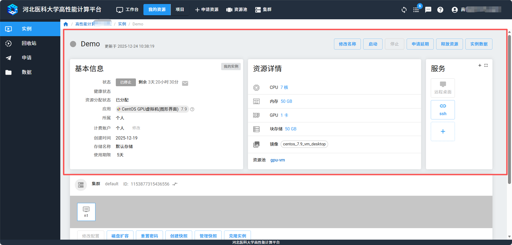
{kind=link}
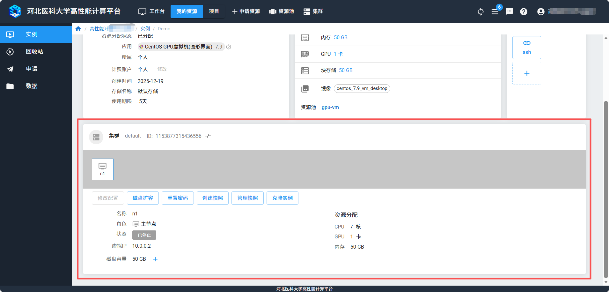
实例基本信息¶
基本信息显示当前实例的运行状态、运行剩余时间、健康状态、资源分配状态、创建实例所用的应用、计费账户、创建时间和使用期限。
{kind=link}
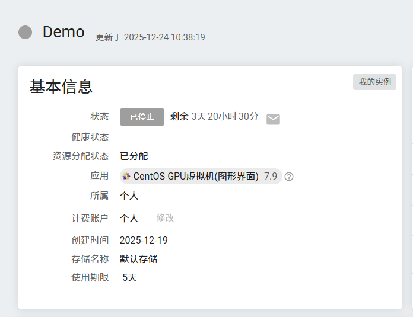
资源详情¶
资源详情显示当前实例所使用的CPU核数、内存数、GPU数、块存储和镜像。
{kind=link}
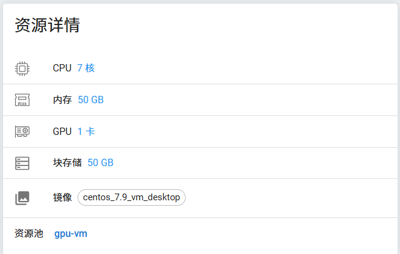
服务和集群¶
服务显示该实例当前的健康状态和开通的功能，例如控制台、交互界面和SSH等。可以点击图标选择相应的服务，也可以添加自定义服务.
{kind=link}
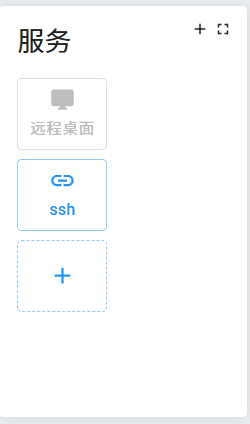
根据用户创建的类型不同，节点数量也不同，有的为单节点独占实例，有的为独占集群。
{kind=link}
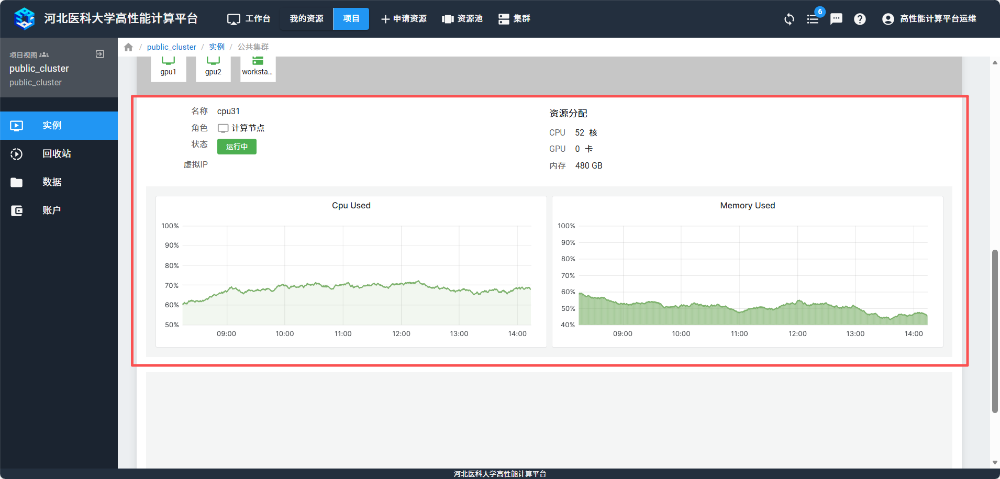
{kind=link}
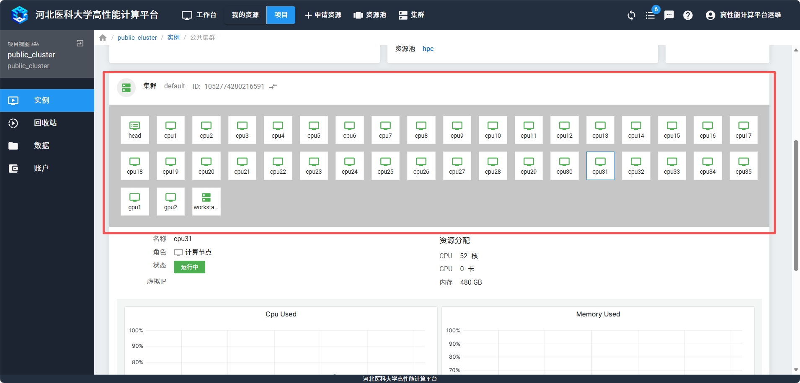
节点详细信息包含如下：
●名称：节点名称。
●角色：分为“主节点”、“工作站”和“计算节点”。“主节点”是作业队列系统的管理节点，负责接受用户提交的任务，进行任务调度和分发。“工作站”节点主要用于用户登录、作业提交、作业查看、文本编辑、数据传输等工作。“计算节点”用于处理用户的计算任务。
●虚拟IP：显示节点的虚拟IP。
●资源分配：当前节点所占用的资源。
●资源使用统计：最近6小时的CPU、GPU和内存使用情况。
启动/停止实例¶
实例详情的右上角，有“启动”和“停止”按钮，点击后就可以运行或停止实例。
{kind=link}
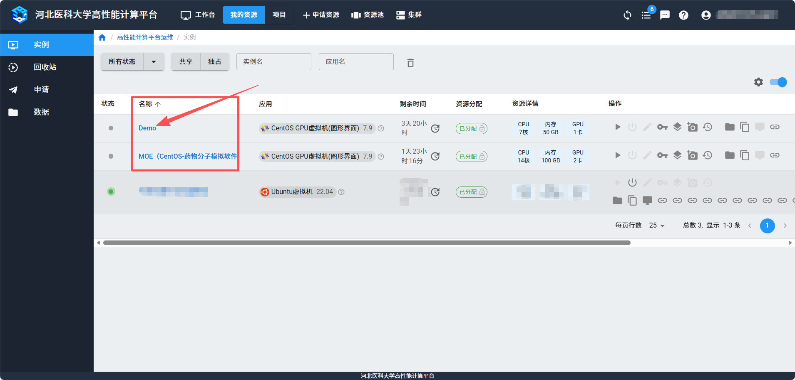
{kind=link}
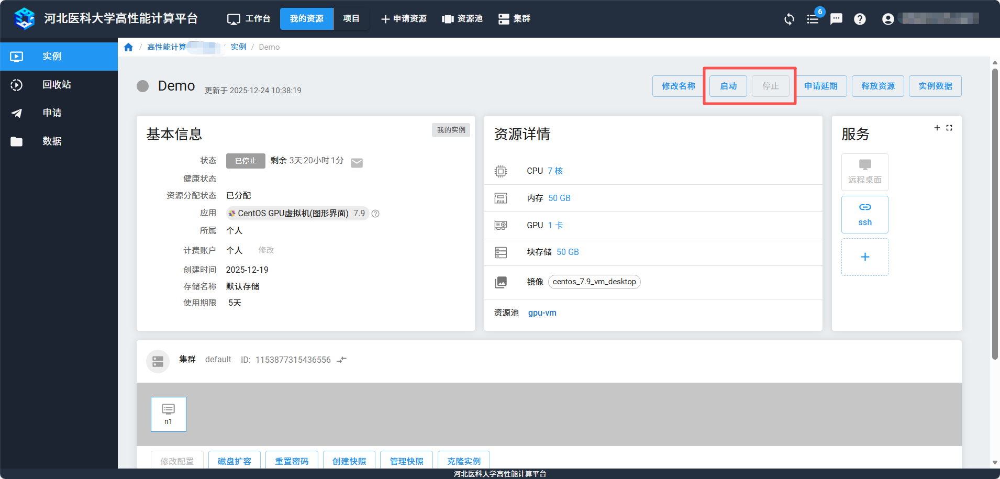
实例延期¶
为了充分的利用资源，每个实例都设有默认的最长使用期限。当创建实例成功后就开始倒计时，倒计时为零时，系统会自动停止该实例释放资源。如果用户希望延长实例的使用时间，可以申请对实例延期。
点击“实例”中的“申请延期”。
{kind=link}
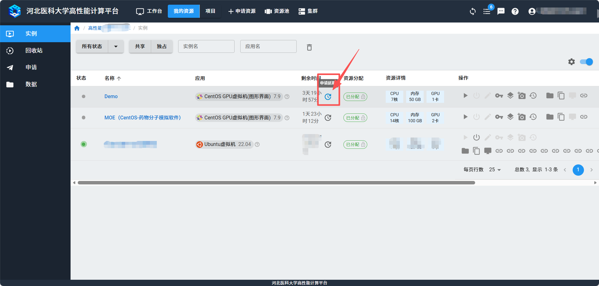
在窗口中选择需要延期的类型，填写希望延长的时间和理由，并提交管理员审批。
{kind=link}
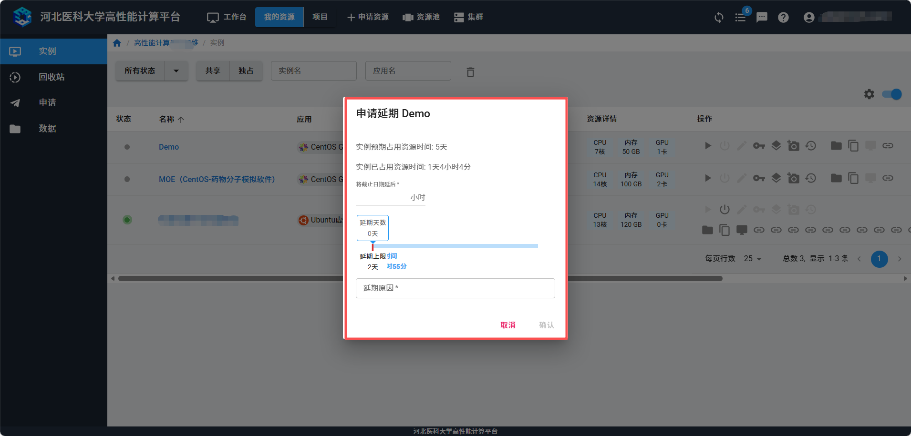
延后实例本次运行的截止日期： 延期申请只针对当前正在运行的实例，不影响之后的实例运行。
更新实例的使用期限： 申请用户该实例的默认最长使用期限，只对下次及以后的运行有效。
⚠️提示
如果要对当前正在运行的实例进行延期，请预留审批时间，避免在快截止时提出申请。
用户可以在“申请”中查看自己已经提交的延期请求以及审批情况。
{kind=link}
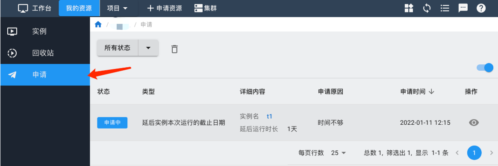
⚠️提示
如果实例有还未审批的请求，不允许对该实例提交相同类型的延期请求。需要等审批完毕后才能再次提交。
资源释放¶
警告
实例会从创建开始计费，直到自动或手动释放资源停止计费。因此如果资源使用完毕，记得及时手动释放资源。
实例只有在停止状态下才能释放资源。停止实例后，点击“释放资源”按钮，并停止计费。
{kind=link}
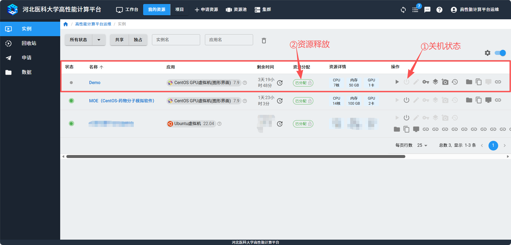
已经释放资源的实例会进入“回收站”，用户可以在“回收站”里找到实例，并重新分配资源，进入计费状态。
{kind=link}
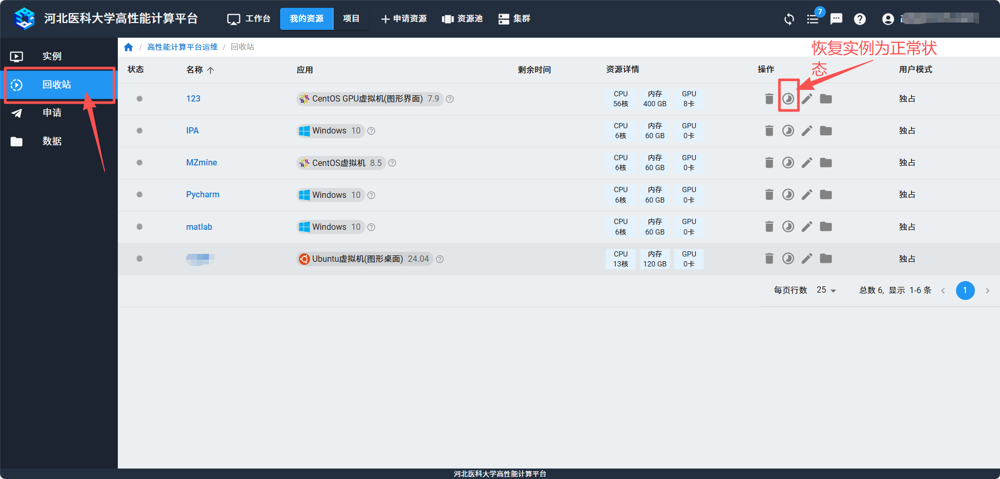
⚠️提示
进入“回收站”的实例的数据和环境都依然保存。如果希望彻底删除，点击删除图标，将实例和数据彻底删除。
{kind=link}
磁盘扩容¶
实例只有在停止状态下才能磁盘扩容。停止实例后，在列表中点击磁盘扩容按钮，
{kind=link}
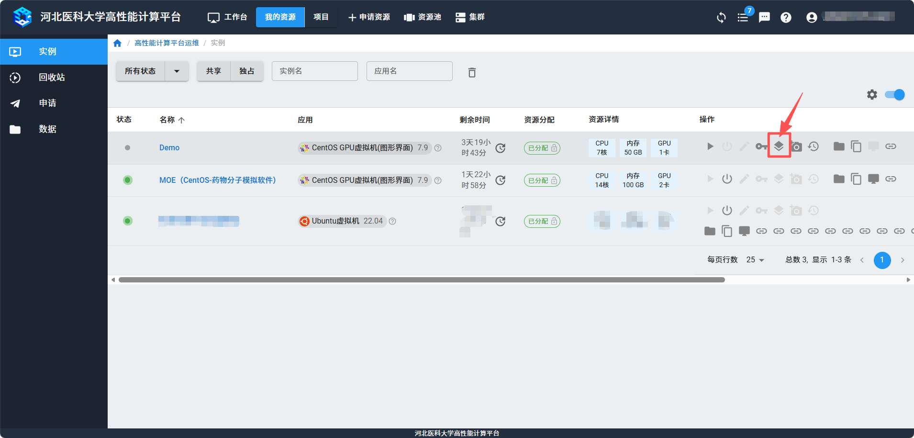
或是在实例详情中点击磁盘扩容按钮。
{kind=link}
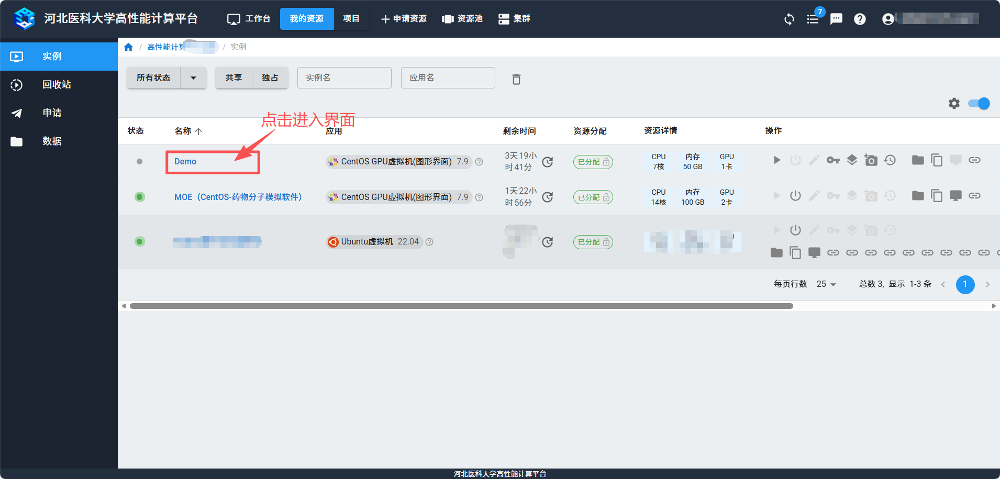
{kind=link}
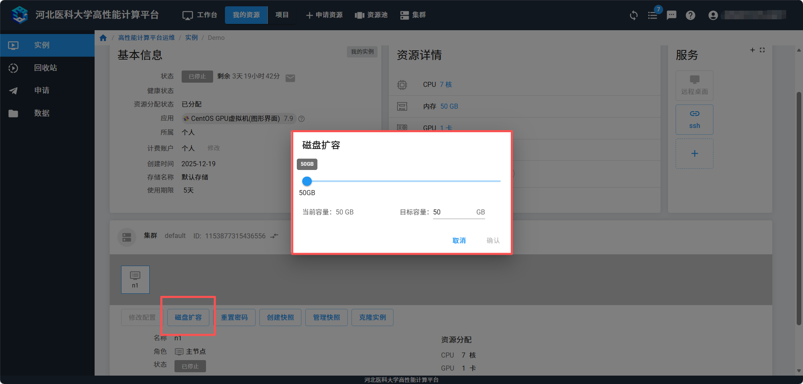
在弹出窗口中，通过滑条或是直接输入磁盘尺寸调整所需要的磁盘大小后，点击确定完成扩容。
{kind=link}
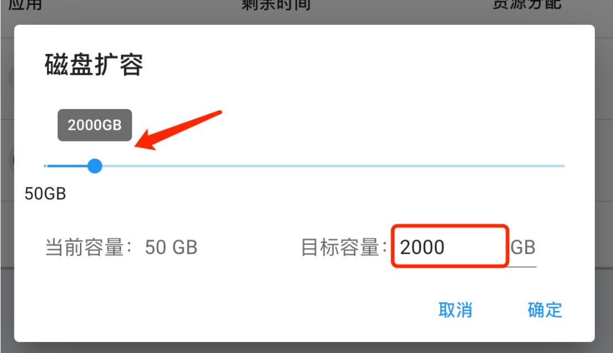
扩容大小在2048G范围内，实例自动扩容，无需其他额外操作，直接使用扩容空间。
警告
磁盘扩容后，原有数据和环境均会被保留，请放心扩容使用。扩容大小在2048G以上，需要按照以下教程操作。
扩容完成后，启动实例，进入到实例中。
在命令行输入 lsblk ，查看磁盘扩容情况，本次扩容空间大小为20T，见下图：
{kind=link}
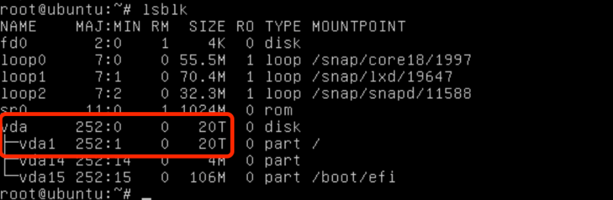
在命令行继续输入 df -Th 查看磁盘的格式，主要包含ext4或者xfs两种，本次实例查看见下图：
{kind=link}
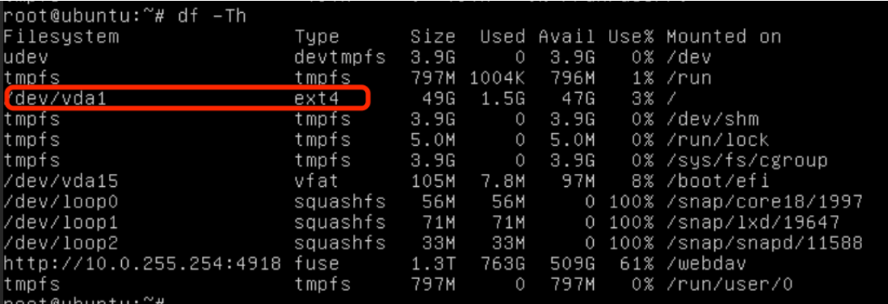
可以看到，lsblk 和 df -Th 两个命令看到的磁盘大小是不一样的。用 lsblk 看到的是20T，但是用 df -Th 查看只有49G，两者存在差异。这是因为lsblk查看的是block device，即逻辑磁盘大小。 df 查看的是file system, 即文件系统层的磁盘大小。磁盘扩容后，block device容量变大，但还没有反映到file system中，需要用 resize2fs 命令来更新。
在命令行输入 resize2fs /dev/vda1 进行更新，扩容时间视扩容空间大小而定，扩容20T需要几分钟的时间，提示如下图所示内容，表示扩容完成。
{kind=link}
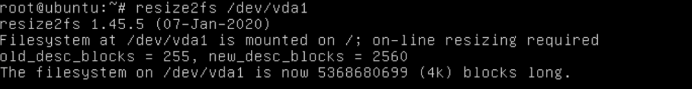
在命令行输入df -Th查看扩容后的磁盘空间，可以看到已经变为20T。
{kind=link}
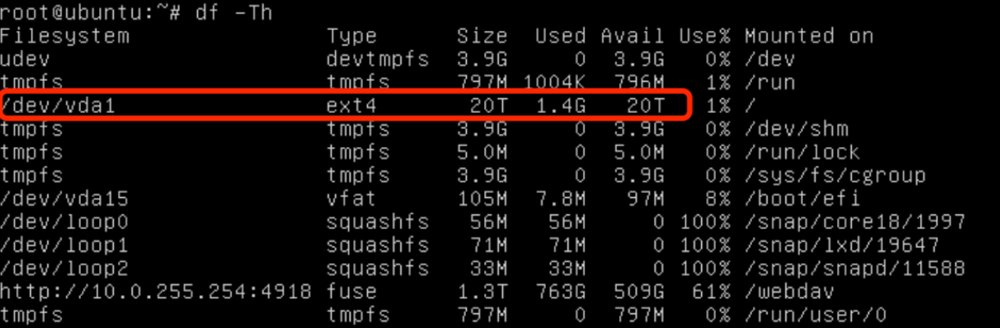
⚠️提示
resize2fs只可用于调整ext4文件系统的大小。 如果分区类型为xfs，则执行xfs_growfs /dev/vda1进行扩容，操作过程和ext4一样。
修改配置¶
如果觉得创建的实例资源不够，比如希望增加CPU核数、GPU卡数或是内存，可以修改实例的资源配置。
停止实例，并释放资源，在“我的资源”-“回收站”里找到实例，点击右侧的“修改配置”，在弹出窗口中选择需要的资源配置。
修改资源配置后，为实例重新分配资源并启动即可。
⚠️提示
每个实例是否可更改资源配置以及可选的资源配置，取决于管理员对应用的设置。
{kind=link}
{kind=link}
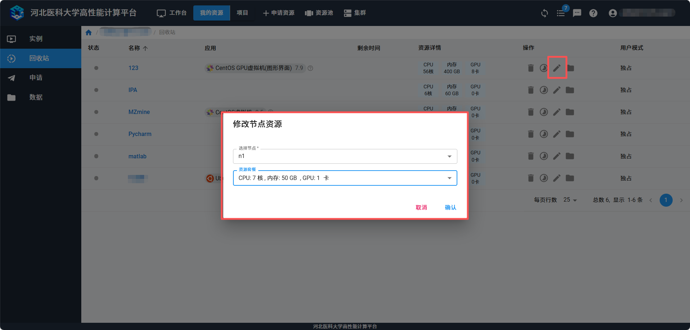
添加自定义服务¶
平台支持用户增加自定义服务，目前只支持自助添加和删除TCP端口映射。点击右上角的“添加自定义服务”。
{kind=link}
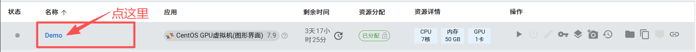
在弹出窗口中输入服务名称，容器或虚拟机内部监听的服务地址，端口和所在节点。
{kind=link}
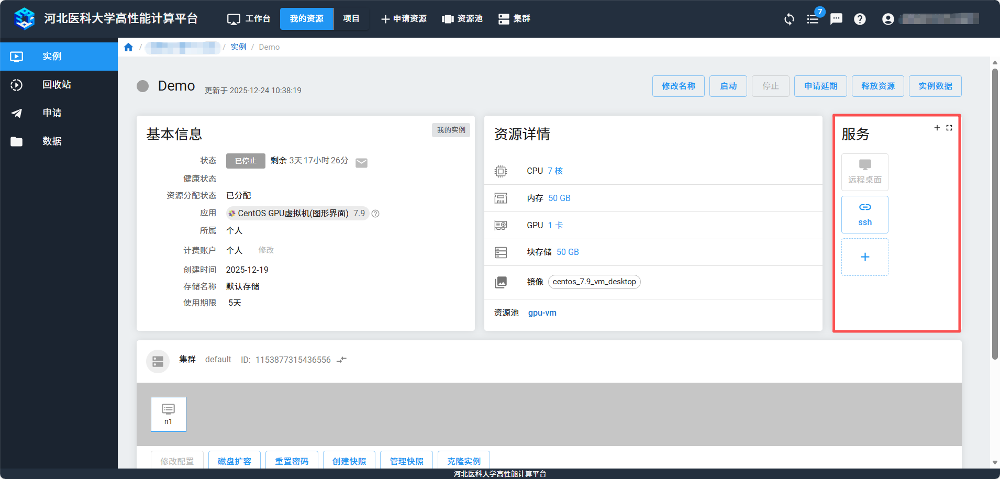
{kind=link}
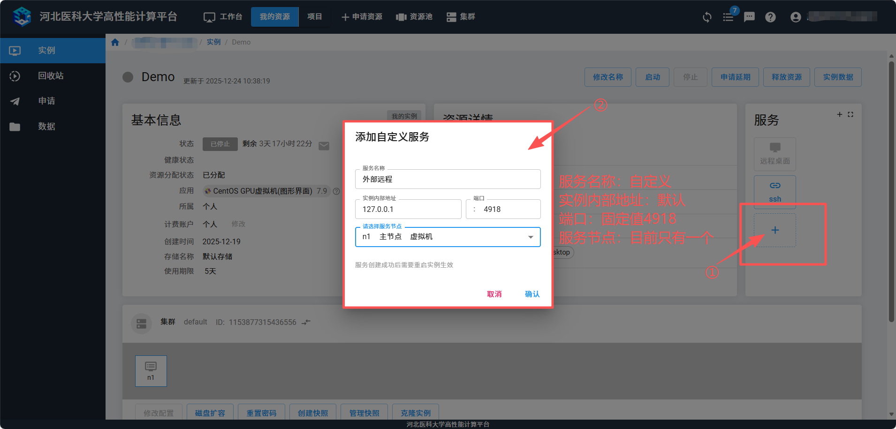
警告
端口名称不可以跟保留的名称，即平台已使用的ssh, desktop, jupyter等重名。 用户也不可添加和删除spec里已经配的端口映射。